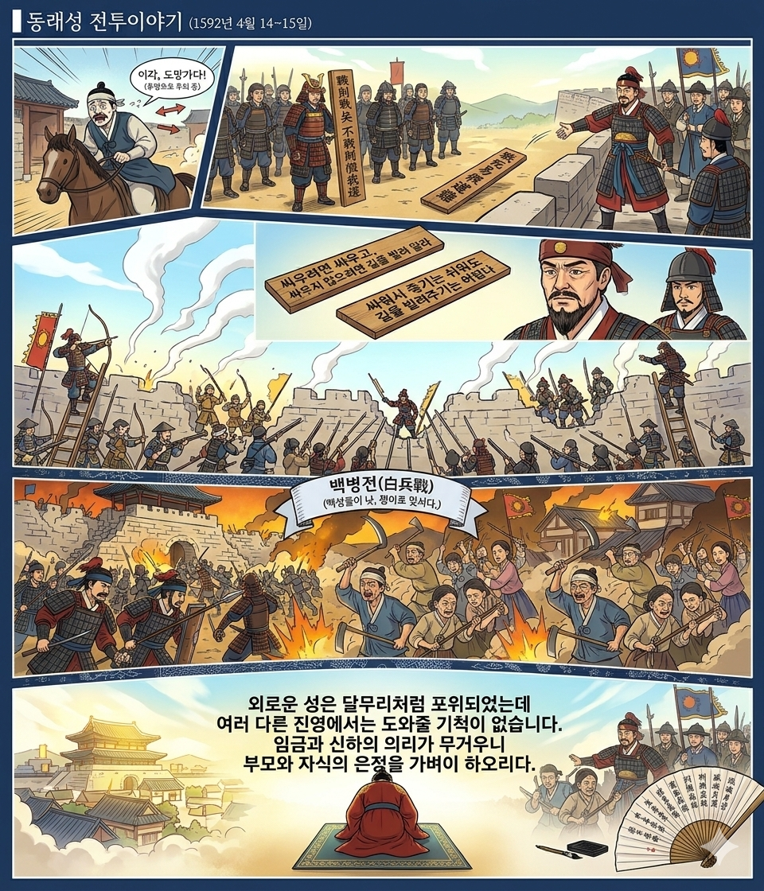

동래읍성 이야기
동래읍성의 숨겨진 역사와 가치를 만나보세요.

성곽에 깃든 역사
동래읍성은 조선 시대 부산 지역의 중심을 지키던 중요한 성곽입니다. 임진왜란 당시 동래성 전투가 벌어졌던 역사적인 현장이기도 합니다.
현재는 아름다운 산책로와 함께 과거의 숨결을 느낄 수 있는 문화유산으로 자리 잡고 있으며, 축제 기간에는 다채로운 프로그램이 펼쳐집니다.

동래읍성의 숨겨진 역사와 가치를 만나보세요.

동래읍성은 조선 시대 부산 지역의 중심을 지키던 중요한 성곽입니다. 임진왜란 당시 동래성 전투가 벌어졌던 역사적인 현장이기도 합니다.
현재는 아름다운 산책로와 함께 과거의 숨결을 느낄 수 있는 문화유산으로 자리 잡고 있으며, 축제 기간에는 다채로운 프로그램이 펼쳐집니다.